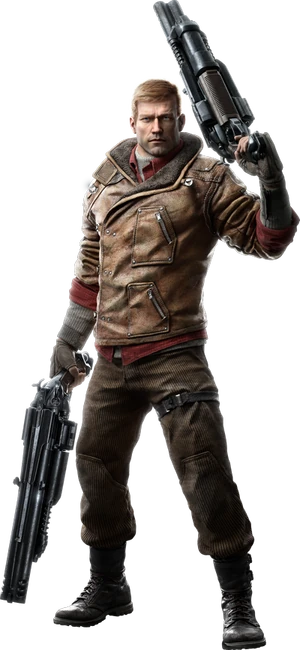
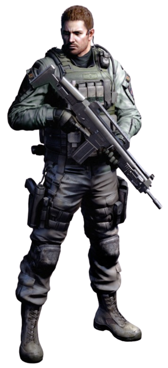
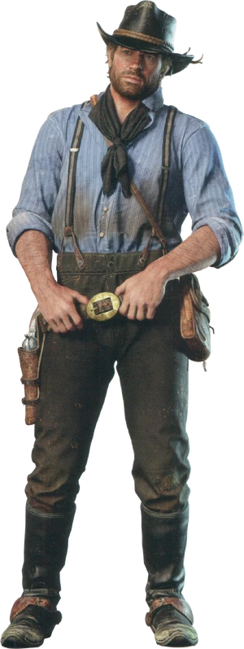
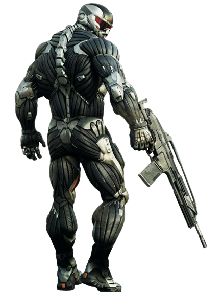
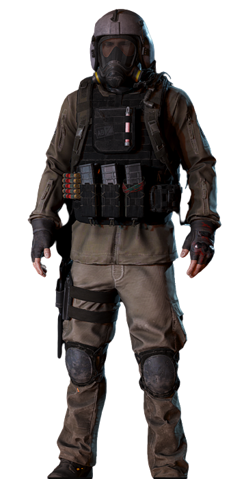
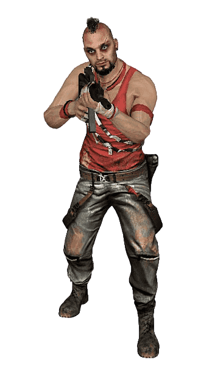
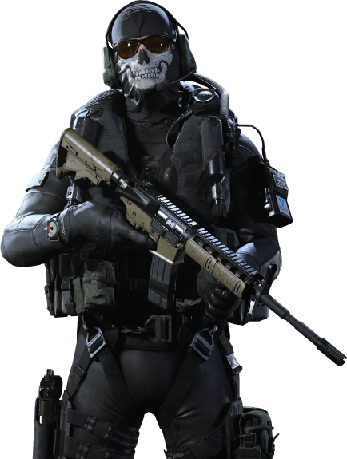
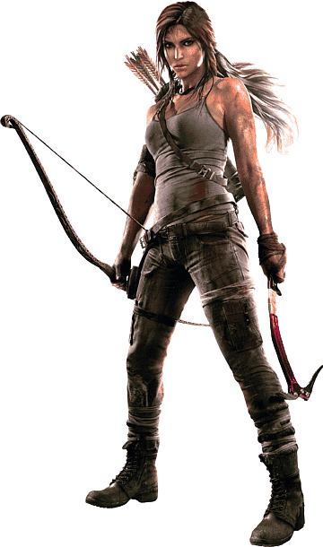
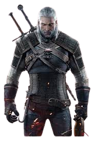
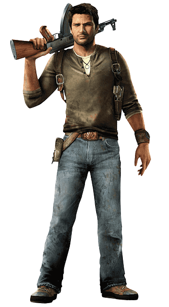

|
Kandy GamesThe decision is yours.....! |
|
|
Kandy GamesThe decision is yours.....! |
Wolfenstein is a first-person shooter video game series developed by id Software,
which began with the release of Castle Wolfenstein in 1981. The series has evolved
over the years and includes several games with different storylines and characters.
The most recent game in the series is Wolfenstein II: The New Colossus, which was released
in 2017. The game is set in an alternate history where the Nazis won World War II, and the
player takes on the role of BJ Blazkowicz, a resistance fighter who must take down the Nazi
regime.
System requirements for Wolfenstein II: The New Colossus are as follows:
Operating system: Windows 7 or later (64-bit versions)
Processor: Intel Core i7-3770 or AMD FX-8350, or better
Memory: 8 GB RAM
Graphics card: NVIDIA GTX 770 4GB or AMD Radeon R9 290 4GB, or better
Storage: 55 GB available space
(Please note that these are the recommended system requirements, and the game may be
playable on lower-end systems, but with reduced graphics quality and performance.)
|
 |
| $20 BUY | |
|  |
Resident Evil is a popular survival horror video game franchise developed by Capcom. The
series first debuted in 1996 and has since spawned numerous sequels, spin-offs, movies, and
other forms of media.
The games typically follow the story of characters who find themselves in a terrifying and
dangerous situation, often involving zombies or other biological horrors. The gameplay
involves exploration, puzzle-solving, and combat as the player navigates through a variety of
environments and battles various enemies.
The system requirements for the latest entry in the series, Resident Evil Village, are as
follows:
Minimum system requirements:
Operating system: Windows 10 (64-bit)
Processor: Intel Core i5-7500 or AMD Ryzen 3 1200
Memory: 8 GB RAM
Graphics: NVIDIA GeForce GTX 1050 Ti or AMD Radeon RX 560
DirectX: Version 12
Storage: 30 GB available space
Recommended system requirements:
Operating system: Windows 10 (64-bit)
Processor: Intel Core i7-8700 or AMD Ryzen 5 3600
Memory: 16 GB RAM
Graphics: NVIDIA GeForce GTX 1070 or AMD Radeon RX 5700
DirectX: Version 12
Storage: 30 GB available space
|
| $20 BUY | |
Red Dead Redemption 2 is an action-adventure game developed by Rockstar Games and
released in 2018. The game is set in the late 19th century in the American Old West, and
follows the story of outlaw Arthur Morgan and the Van der Linde gang as they try to survive
in a rapidly changing world.
The gameplay involves a combination of exploration, combat, and various tasks and
missions, including heists, hunting, and fishing. The game also includes a dynamic weather
and day/night system, as well as an extensive open world filled with various characters
and activities.
The system requirements for Red Dead Redemption 2 on PC are as follows:
Minimum:
OS: Windows 7 – Service Pack 1 (6.1.7601)
Processor: Intel Core i5-2500K / AMD FX-6300
Memory: 8GB RAM
Graphics Card: Nvidia GeForce GTX 770 2GB / AMD Radeon R9 280 3GB
HDD Space: 150GB
Sound Card: DirectX compatible
Recommended:
OS: Windows 10 – April 2018 Update (v1803)
Processor: Intel Core i7-4770K / AMD Ryzen 5 1500X
Memory: 12GB RAM
Graphics Card: Nvidia GeForce GTX 1060 6GB / AMD Radeon RX 480 4GB
HDD Space: 150GB
Sound Card: DirectX compatible
|
 |
| $20 BUY | |
|  |
Crysis 3 is a first-person shooter video game developed by Crytek and published by
Electronic Arts. It is the third installment in the Crysis series and was released in 2013
for Microsoft Windows, PlayStation 3, and Xbox 360.
The game is set in a post-apocalyptic New York City, which has been encased in a
nanodome by the corrupt CELL Corporation. Players take on the role of Prophet, a soldier
enhanced with nanotechnology, as he battles CELL and an alien race known as the Ceph.
The gameplay of Crysis 3 is similar to its predecessors, with a focus on stealth, exploration,
and customizable weapons and abilities. The game also features a multiplayer mode, which
includes various game modes and customization options.
As for system requirements, the minimum requirements for playing Crysis 3 on PC are:
OS: Windows Vista, Windows 7, or Windows 8 (64-bit)
CPU: Dual-core CPU (Intel Core i3 or better)
RAM: 2 GB
Graphics card: DirectX 11 graphics card with 1 GB video RAM (Nvidia GTX 560 or AMD Radeon HD5870)
Hard drive space: 17 GB
However, to enjoy the game at its fullest, the recommended system requirements are:
OS: Windows 7 or Windows 8 (64-bit)
CPU: Quad-core CPU (Intel Core i5 or better)
RAM: 8 GB
Graphics card: DirectX 11 graphics card with 2 GB video RAM (Nvidia GTX 680 or AMD Radeon HD7970)
Hard drive space: 17 GB
|
| $20 BUY | |
Metro Exodus is a first-person shooter video game developed by 4A Games and published
by Deep Silver. It was released in 2019 for Microsoft Windows, PlayStation 4, Xbox One, and
later in 2020 for PlayStation 5 and Xbox Series X/S.
The game is set in a post-apocalyptic world, following the events of the previous Metro
games. Players take on the role of Artyom, a survivor of a nuclear war who must lead a g
roup of survivors through the ruins of Russia in search of a new home.
The gameplay of Metro Exodus features a mix of exploration, survival, and combat, with a
focus on scavenging for resources and crafting. The game also features a day and night
cycle, with dynamic weather and environments that affect gameplay.
As for system requirements, the minimum requirements for playing Metro Exodus on PC are:
OS: Windows 7/8/10 (64-bit)
CPU: Intel Core i5-4440 or equivalent
RAM: 8 GB
Graphics card: Nvidia GeForce GTX 670 or equivalent
Hard drive space: 59 GB
However, to enjoy the game at its fullest, the recommended system requirements are:
OS: Windows 10 (64-bit)
CPU: Intel Core i7-4770K or equivalent
RAM: 8 GB
Graphics card: Nvidia GeForce GTX 1070 or equivalent
Hard drive space: 59 GB
|
 |
| $20 BUY | |
|  |
Far Cry 3 is an open-world first-person shooter video game released in 2012 by Ubisoft
Montreal. The game takes place on a tropical island in the Indian Ocean and follows the
story of Jason Brody, a tourist who becomes stranded on the island after a skydiving trip
goes wrong. He must rescue his friends from a group of pirates while uncovering the secrets
of the island and battling the dangerous wildlife.
The game features a variety of weapons and vehicles that the player can use to complete
missions and explore the island. The player can also craft items, hunt animals, and collect
plants to enhance their abilities.
Here are the minimum system requirements for Far Cry 3:
Operating System: Windows XP, Vista, 7, 8, or 10
Processor: 2.66 GHz Intel Core 2 Duo E6700 or 3.00 GHz AMD Athlon 64 X2 6000+
RAM: 4 GB
Video Card: 512 MB DirectX 9.0c compliant card with Shader Model 3.0 or higher
(NVIDIA GeForce 8800 GT or AMD Radeon HD 2900 XT)
Sound Card: DirectX 9.0c compatible sound card
Hard Drive Space: 15 GB
Please note that these are the minimum requirements, and the game may run better on more
powerful hardware.
|
| $20 BUY | |
Call of Duty Modern Warfare is a first-person shooter video game developed by Infinity
Ward and published by Activision. It was released in October 2019 and is the sixteenth
installment in the Call of Duty series.
The game is set in a fictional world and follows the story of a CIA officer and British SAS
forces as they try to stop a global conflict. The game features both single-player and
multiplayer modes.
In terms of system requirements, the minimum requirements for PC are:
OS: Windows 7 64-bit (SP1) or Windows 10 64-bit
CPU: Intel Core i3-4340 or AMD FX-6300
RAM: 8GB
GPU: NVIDIA GeForce GTX 670 / NVIDIA GeForce GTX 1650 or AMD Radeon HD 7950
DirectX: Version 12
Storage: 175GB available space
The recommended system requirements for PC are:
OS: Windows 10 64-bit latest update
CPU: Intel Core i5-2500K or AMD Ryzen R5 1600X
RAM: 12GB
GPU: NVIDIA GeForce GTX 970 / NVIDIA GeForce GTX 1660 or AMD Radeon R9 390 / AMD Radeon RX 580
DirectX: Version 12
Storage: 175GB available space
Note that the game's file size is quite large, so make sure you have enough storage space
available. Additionally, the game requires a stable internet connection for multiplayer modes.
|
 |
| $20 BUY | |
|  |
Shadow of the Tomb Raider is an action-adventure game developed by Eidos Montréal and
published by Square Enix. In the game, players take control of the famous adventurer Lara
Croft as she travels through various locations around the world, uncovering ancient
mysteries and battling dangerous enemies.
The game features a mix of exploration, puzzle-solving, and combat, and it also includes a
crafting system that allows players to create weapons, ammunition, and other useful items.
In addition, there are various side missions and optional tombs to discover, which can
reward the player with valuable treasures and upgrades.
As for system requirements, the minimum specs for the PC version of the game are as
follows:
OS: Windows 7 64-bit
CPU: Intel i3-3220 or AMD equivalent
RAM: 8 GB
Graphics card: Nvidia GTX 660/GTX 1050 or AMD Radeon HD 7770
Storage: 40 GB free space
The recommended specs are:
OS: Windows 10 64-bit
CPU: Intel Core i7 4770K or AMD Ryzen 5 1600
RAM: 16 GB
Graphics card: Nvidia GTX 1060 6GB or AMD Radeon RX 480 8GB
Storage: 40 GB free space
Note that these requirements may vary depending on the specific hardware and software
configuration of your computer, and the game is also available on various consoles such as
PlayStation and Xbox.
|
| $20 BUY | |
The Witcher 3: Wild Hunt is an action role-playing game developed by CD Project Red and
released in 2015. The game is set in a dark fantasy world and follows the story of Geralt of
Rivia, a monster hunter known as a Witcher, as he searches for his adopted daughter while
also dealing with political turmoil and supernatural threats.
The game features an open-world environment that is full of quests, side missions, and
other activities for players to explore. Players can choose to follow the main storyline or
take on various side quests and contracts to earn money and gain experience points.
The combat system in The Witcher 3: Wild Hunt is a combination of swordplay, magic, and
various special abilities that can be unlocked and upgraded as the player progresses
through the game. Players can also use alchemy to craft potions and other items that can
enhance their abilities.
The system requirements for The Witcher 3: Wild Hunt are:
Minimum:
Operating System: 64-bit Windows 7, 8, or 10
Processor: Intel CPU Core i5-2500K 3.3GHz / AMD CPU Phenom II X4 940
Memory: 6 GB RAM
Graphics Card: Nvidia GPU GeForce GTX 660 / AMD GPU Radeon HD 7870
Storage: 35 GB available space
Recommended:
Operating System: 64-bit Windows 7, 8, or 10
Processor: Intel CPU Core i7 3770 3.4 GHz / AMD CPU AMD FX-8350 4 GHz
Memory: 8 GB RAM
Graphics Card: Nvidia GPU GeForce GTX 770 / AMD GPU Radeon R9 290
Storage: 35 GB available space
|
 |
| $20 BUY | |
|  |
Uncharted 4: A Thief's End is a popular action-adventure video game developed by Naughty
Dog and published by Sony Computer Entertainment. It is the fourth installment in the
Uncharted series, and follows the adventures of Nathan Drake, a treasure hunter, as he
searches for a lost pirate treasure.
The game is set several years after the events of the previous game, and features improved
graphics, more advanced gameplay mechanics, and a deeper storyline. The game features
both single-player and multiplayer modes, and players can engage in a variety of different
missions and challenges.
The system requirements for Uncharted 4: A Thief's End are as follows:
PlayStation 4 console
At least 50GB of free hard drive space
Internet connection required for online features and updates
DualShock 4 controller (included with PlayStation 4 console)
High-definition TV with HDMI input capable of displaying 720p or 1080i resolution
(1080p recommended)
|
| $20 BUY | |